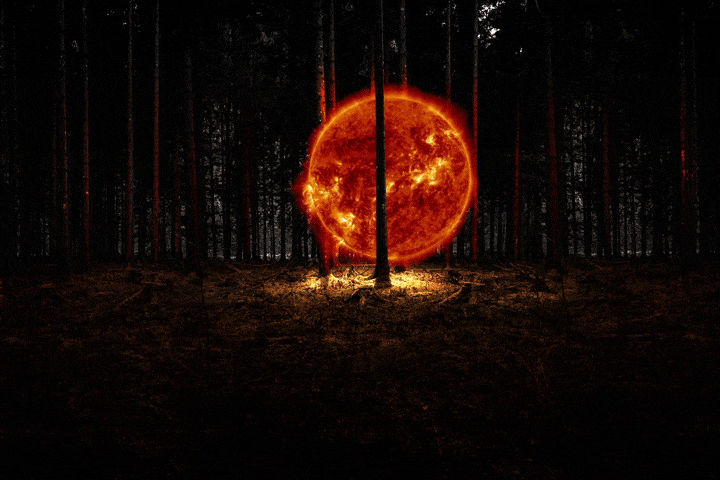

<!DOCTYPE html>
<html lang="en" dir="ltr">
  <head>
    <meta charset="utf-8">
    <title>Liminal Chaos</title>
    <link rel="stylesheet" href="../css/style.css">
    <link href='https://fonts.googleapis.com/css?family=Inconsolata' rel='stylesheet'>
  </head>

  <body>


    <div id="sceneSingle">

          


    </div>

    <div id="textboxHoz">

<p>
The morning arrives.
<br><br>
You and Brenil set off to the forest. You can sense their wariness.
<br>You both pack an extra stash of bloodfruit with hopes to keep the beasts away.
<br><br>You arrive near the light of the forest as the sun sets.
<br><br>
<i>"There it is. The orb will be just past the light by a cave. You will know.
  I have to stay here. <br>
  It will be dangerous for you if I were to follow."</i> <br>Brenil prepares their blade.

<br>
You walk towards the light and you see the glowing cave ahead.
<br><br>Brenil
You hope Brenil will still be there unharmed <a href="FLover.html"><i><b>when you return</b></i></a>.

</p>
  </div>


  </body>

  </html>
